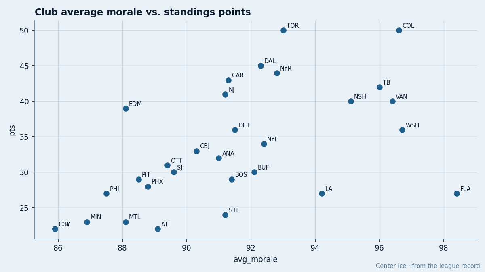

The Best Room in Hockey, 27 Points
The Bureau's Morale Scale has the Panthers at 98.4, the highest mark in the league. The standings say 27 points. The scatter makes the gap visible.
 Doug ReimerAnalytics editor, ex-video coach · The Slot Report
Doug ReimerAnalytics editor, ex-video coach · The Slot Report
I plotted the Bureau's Morale Scale club average against points for all 30 teams. The  Florida Panthers sit at the top of the morale axis and the bottom of the points axis. No other club is that far from the diagonal.
Florida Panthers sit at the top of the morale axis and the bottom of the points axis. No other club is that far from the diagonal.

98.4 is the highest morale average in the league. The next is  Washington Capitals at 96.7, then
Washington Capitals at 96.7, then  Colorado Avalanche at 96.6, then
Colorado Avalanche at 96.6, then  Vancouver Canucks at 96.4. The Panthers are 1.7 points ahead of the second-best room. On the points axis, Florida Panthers has 27, tied with
Vancouver Canucks at 96.4. The Panthers are 1.7 points ahead of the second-best room. On the points axis, Florida Panthers has 27, tied with  Philadelphia Flyers and
Philadelphia Flyers and  Los Angeles Kings. Three clubs share that total.
Los Angeles Kings. Three clubs share that total.
The Book lists two Panthers in its top 60. Both are goalies.  Roberto Luongo94 grades 94.
Roberto Luongo94 grades 94.  Felix Potvin87 grades 87. No Panther skater appears in the top 60. No Panther appears in the top 30 scorers. The workload table shows Luongo in 21 of 30 games, Potvin in 9, and
Felix Potvin87 grades 87. No Panther skater appears in the top 60. No Panther appears in the top 30 scorers. The workload table shows Luongo in 21 of 30 games, Potvin in 9, and  Jani Hurme85 in 1. The Slot Report covered the committee in net in its December 4 timeshare audit. The committee explains the goalies. It does not explain the absence of a single skater from the top 60.
Jani Hurme85 in 1. The Slot Report covered the committee in net in its December 4 timeshare audit. The committee explains the goalies. It does not explain the absence of a single skater from the top 60.
 Vaclav Nedorost78 is the one name that moves. A 22-year-old center, he reads +6 on the Development Index, from a base of 75 to a current 78. He has 4 points in 30 games. The form is up. The production is flat. The room is warm, his form is up, but the scoreboard has not moved.
Vaclav Nedorost78 is the one name that moves. A 22-year-old center, he reads +6 on the Development Index, from a base of 75 to a current 78. He has 4 points in 30 games. The form is up. The production is flat. The room is warm, his form is up, but the scoreboard has not moved.
The Panthers have 9 spells and 61 days lost on the injury ledger. That is the 6th-fewest total in the league. The players are healthy and happy. They are not scoring.
The club spends $52.17M, which buys 27 points at $1.93M per point. The worst rates in the league: Philadelphia Flyers at $2.56M,  St. Louis Blues at $2.36M,
St. Louis Blues at $2.36M,  Montreal Canadiens at $2.31M,
Montreal Canadiens at $2.31M,  Detroit Red Wings at $2.25M,
Detroit Red Wings at $2.25M,  Calgary Flames at $1.97M. The Panthers sit just behind the worst cluster for value and at the top of the league for morale.
Calgary Flames at $1.97M. The Panthers sit just behind the worst cluster for value and at the top of the league for morale.
The Bureau's Morale Scale is a 0-to-100 index of the locker room's condition. A room at 98.4 means the players are happy and the bench is stable. The coach's decisions are not generating friction. That is a real asset. It makes the roster harder to trade from next summer and the team harder to beat in a four-game series. It does not make a point.
Washington Capitals at 96.7 has 36 points, 9 ahead of Florida. Colorado Avalanche at 96.6 has 50, 23 ahead. Vancouver Canucks at 96.4 has 40, 13 ahead. The correlation between morale and points is positive. The Panthers are the outlier that shows how weak it is. A room 1.7 points above the second-best is 9 to 23 points behind those clubs on the standings.
The room is real. The question is what it is for. The Bureau will revise the Morale Scale every edition. If the 98.4 holds through January and the points do not move, the scale is measuring a real quality that does not translate to points.